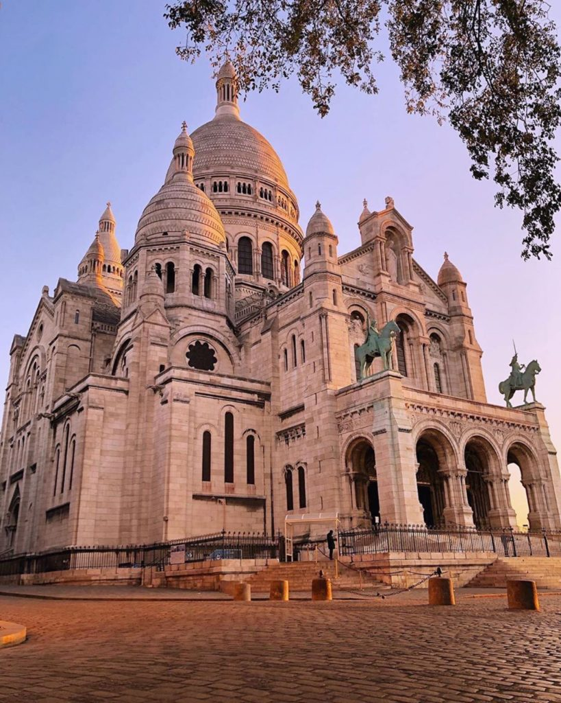

Onde Estamos
Nossa principal localização fica na capela de Montmartre, em Paris (extremo norte de Paris, mais especificamente no 18º arrondissement). Porém estamos nos espalhando nessas terras selvagens, no Novo Mundo, a fim de salvá-las.
Temos uma sede em uma dessas terras, chamada de Colégio Santo Inácio (Rua São Clemente, 226, em Botafogo, Rio de Janeiro)
